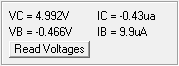

|  |
Clicking Read Voltages
sends the INT command to turn off interupts in Mini_CT. This stops AC
waveform generation if it is running. The collector voltage will stop
on the current data point for the AC Sweep. If Slow Sweep was selected, the collector voltage will be zero if the sweep has completed. If a Set Collector V/100 operation was last performed, the collector voltage will be that set voltage. Remember, the collector voltage settting is for the output from the collector voltage DAC. The voltage at the collector pin will differ if a load on the output causes a drop across the sense resistor. Read Voltages sends a DCM command an it averages all 256 of the returned data points. The collector voltage and current displayed as VC = and IC = are low noise measurements due to the averaging. The displayed base values VB = and IB = are copies of the Set Base V/100 and Set Base uA/10 values. Mini_CT does not measure base values. Main |